Looking at the screenTarsal pads gripping glassPhysics 800 Hz · 102 DoF
Experiment 1 · Walking. The fly walks across a phone lying on the table and presses tiles with a foreleg.
Fly eye750 ommatidia · 4.5° between axes
Loading the arena…
EDLS dashboard suites
Learning and metrics, live from the simulation
Four dashboards from the psychometric specification, fed by the running fly. Values update while the simulation runs in the Simulate view. Where a quantity is a stand-in for a sensor or model the app does not yet have, the card says so.
Current trial
Experiment 1 · Walking
Build the word that means
able to be counted again
Word parts placed0 of 3
The fly is looking for the prefix.
Session
0answers
0%correct
0words built
Answers per minute0Mean landing error0 pxDifficulty level1 of 6Curriculum resets0
Dashboard 1 · Kinematic and sensorimotor performance
Tarsal adhesion
µN, pads in contact
00 of 6 pads on the glass
Stand-in: about 12 µN per tarsal pad in contact, the order of measured Drosophila pad forces. The MuJoCo adhesion actuators will replace it.
Ommatidial contrast
ΔL under the gaze
0.00luminance spread in a 40 px patch where the eye axis meets the glass
Sampled from the real screen texture at the point the head camera looks at.
Joint torque proxy
59 channel norm
0summed foot speed across six legs, scaled
Stand-in for the 59-dimensional action vector until the physics body exists.
Microsaccadic sampling
where the eye axis meets the screen
Head sweeps during look and hover phases trace the path. Sequential contrast changes along it are what resolve letters at a 4.5° inter-ommatidial angle.
Acuity
eye to glass, 1 to 10 mm band
0.0 mmnow
0%of time in band
Dashboard 2 · Connectomic and neurophysiological monitoring
Last reward R–Expected value V (memory before)–Δw applied–
Each bar is one answer. Green raised the Kenyon cell to MBON weight of the needed word part; red lowered it.
Differential memory decay
STM versus LTM compartments
γ lobe STM, decays in about 25 sα/β lobe LTM, consolidated weight
Neuro-connectivity matrix
Region-level stand-in: fibre tracts of the stylised brain, scaled by live co-activity. Rows for the ventral nerve cord are absent from FAFB, which stops at the brain.
Dashboard 3 · Psychometric and cognitive diagnosis
Q-matrix
tasks to latent attributes
Task
α1 Contrast edge detection
α2 Shape discrimination
α3 Sequential symbol tracking
α4 Precision motor targeting
Symbol identification
Yes
Yes
No
Yes
Phonetic sequence
Yes
Yes
Yes
Yes
High-contrast touch
Yes
No
No
Yes
G-DINA attribute mastery
posterior, mastered at 0.80
Proxies from the running session: α1 from contrast under the gaze while reading, α2 from accuracy when distractors share the needed kind, α3 from root and suffix placements, α4 from landing error.
Half-Life Regression
p(recall) = 2^(−Δt / h)
One simulated minute counts as one day. Half-life grows with the weight: h = 0.5 · 2^(4m) days.
Wright map
Many-Facet Rasch, one logit scale
θ from the logit of overall accuracy with its standard error; β per task from the logit of that task's failure rate. S-X² is approximated from observed against expected success per difficulty level and flagged at 1.5 or above.
Dashboard 4 · Curriculum adaptation and sequence policy
xLSTM memory analytics
mLSTM state, 8 features
C_t = f_t C_{t−1} + i_t v_t k_tᵀ with the stabiliser m_t and normaliser n_t, run on keys from the fly's sensory stream and values from the task state. A toy cell, not the trained model; TFLA kernels apply once inference moves to WebGPU.
Decision Transformer
return-to-go and policy divergence
Return-to-go target (dopamine)0.58Achieved (dopamine now)0.50Difficulty level1 of 6Correct streak0
Divergence is the mean distance between the fly's actual path and the ghosted optimal path to the correct tile (shown dashed in the arena with paths on). Above 10 the curriculum resets a level.
Dashboard 5 · Teacher navigation
Experiment 5. A teacher fly grades the flies from Experiments 1 to 4 in a gradebook on a fly-sized laptop, using only the trackpad and keys. Their rows are this session's real trials, so the other experiments are what the teacher is reading.
Grading session
not running
0students graded
0clicks
0misclicks
Keystrokes0Cursor path0 pxDistance flown0 mmDistance walked0 mmMean time per student–Mean grading error–
Grading error is the gap between the grade the teacher typed and the student's real accuracy. The teacher misreads digits less as it practises.
Fitts' law
ID = log₂(D/W + 1) against movement time
Fitted MT = a + b·ID–Hits / attempts0 / 0
Each dot is one cursor movement to a target: D the distance, W the target's smaller side. Green landed on the target, red missed.
Cursor heatmap
where the teacher clicked
Drawn over a miniature of the gradebook. Rows and buttons the fly aims for should light up; scatter elsewhere is misclicks.
Class roster
the students, live
Student
Answers
Correct
Words
Grade given
Error
Time by activity
reading · steering the cursor · typing · flying
Dashboard 6 · District proctoring
Experiment 6. A district admin fly watches nine students on a 3 × 3 grid of webcam sessions, with a computer-vision overlay and FlyAI recommendations. Three of the nine are seeded with a cheating behaviour; the dashboard scores the flags against that hidden truth.
Proctoring session
not running
0FlyAI flags
0confirmed
0false alarms
Check-ins sent0Precision of flags–Cheaters caught0 of 3Mean response time–Admin clicks / misclicks0 / 0
A flag is confirmed when the student it names was seeded to cheat. Response time runs from the FlyAI flag to the admin's check-in click.
Attention by student
eye contact with the task, smoothed
From the vision overlay: share of recent frames where the gaze line meets the student's own screen. Red names are seeded cheaters; the admin does not see this column.
Detections
what the overlay is seeing now
looked awayhelper flysecond deviceoff camera
FlyAI log
recommendations and admin actions
About
What a fly brain can tell us about learning to read
Fruit Fly Lingo is the interaction layer of the Embodied Drosophila Literacy Simulation (EDLS). It puts a simulated fruit fly in front of a smartphone that teaches word parts, and asks a simple question with a hard answer: can a nervous system that evolved for finding food and avoiding swatters be repurposed to assemble prefixes, roots and suffixes?
What the app simulates
A procedural fly with six IK legs, wings and a head-mounted compound-eye camera lives on a table with a phone. The phone runs a small morphology curriculum in the style of LibreLingo and Word Root Workshop: build the word that means able to be counted again from re-, count and -able. The fly answers by touching tiles, and the student experiments vary how it gets there: walking on the glass, flying up to read and diving to land, holding a fly-sized phone and swiping, or spelling the word key by key on a laptop. Two more experiments put flies on the other side of the desk: a teacher grading those students from a fly-sized laptop, and a district admin proctoring nine of them through webcam sessions with a vision overlay and an assistant called FlyAI.
A stylised central nervous system, about 55,000 points laid out after Drosophila anatomy, lights up with what the fly does: optic lobes while it reads, central complex and leg neuropils while it moves, mushroom bodies and taste centres when a sugar reward arrives, lateral horn when it flinches from a wrong answer.
What we are trying to learn
Whether biological wiring is a useful inductive bias for symbolic learning. A random network can learn to tap tiles; the interesting result is a network constrained by the fly's actual circuits doing it, because then the solution has to route through the same sensorimotor pathways a real fly uses. The "Digital Sphinx" problem, a worm connectome driving a fly body, shows how easily a high-capacity learner fakes the behaviour without the biology.
How reward learning in the mushroom body maps onto a curriculum. The PAM dopamine cluster gates plasticity between Kenyon cells and output neurons; here that is the rule Δw = η(R − V) that strengthens a word part's memory after a correct answer, and the Half-Life Regression that schedules its review.
How to measure learning in a non-human agent. The dashboards apply G-DINA cognitive diagnosis, Half-Life Regression and the Many-Facet Rasch model so that "the fly learned re-" is a claim with a posterior, a half-life and a logit, not a feeling.
The student experiments
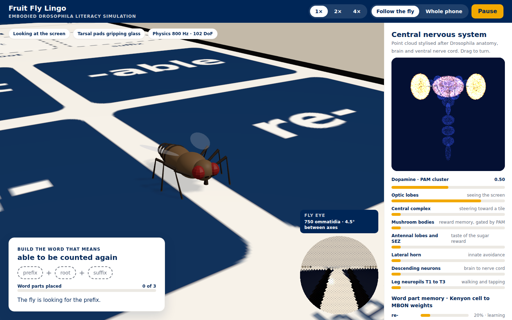
1 · Walking. Tarsal adhesion on glass, a foreleg press as the answer, microsaccadic head sweeps to read.
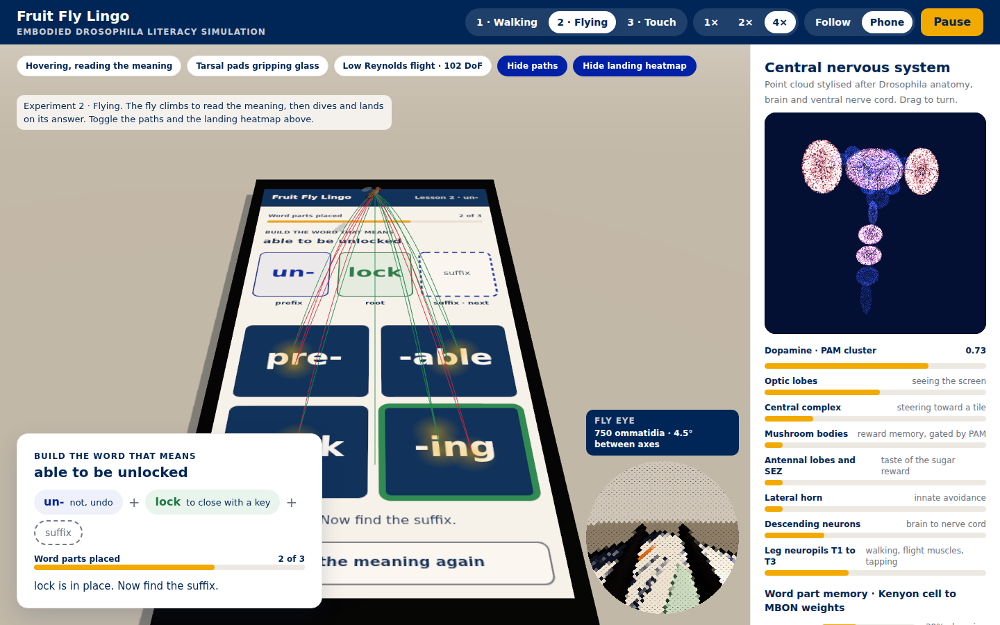
2 · Flying. Climb to read, dive to answer. Flight paths and the landing distribution are recorded per trial.
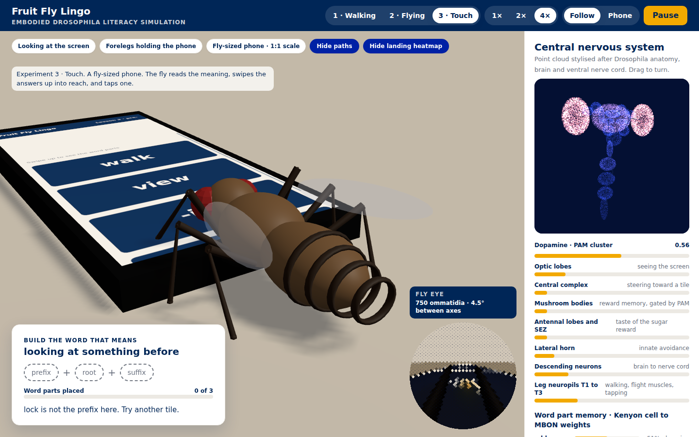
3 · Touch. A phone at the fly's own scale, held at the bottom edge, with a scrolling list of answers.
Experiment 1 in detail
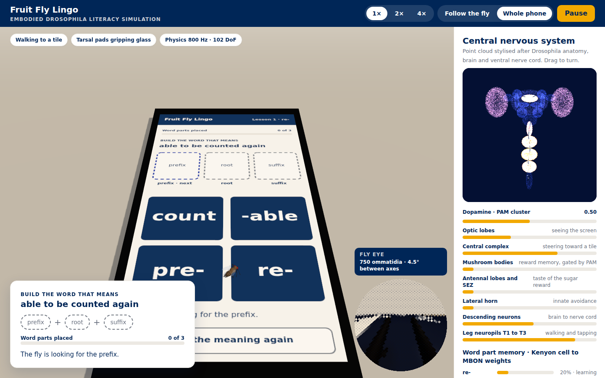
The screen. A canvas texture: progress, the meaning to build, three slots, four tiles, a feedback line. Tile pixel rectangles map to world coordinates the fly walks to.
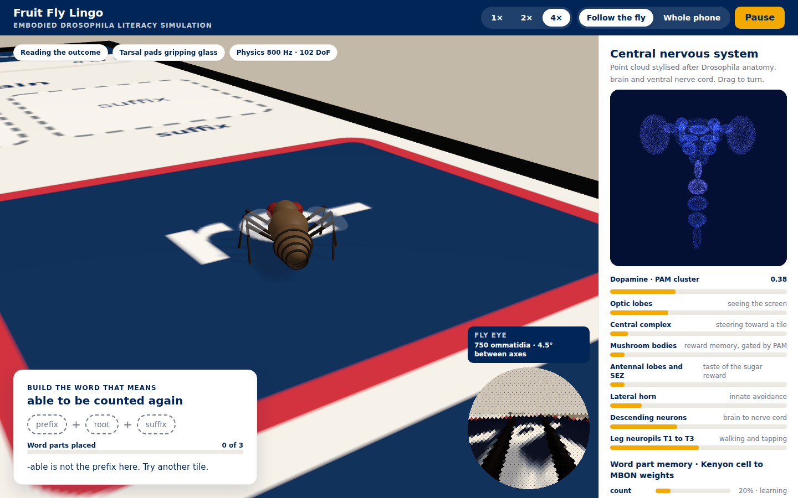
A wrong tap. The tile flashes red, the lateral horn and descending neurons fire, the fly flinches, dopamine drops and that word part's memory weakens.
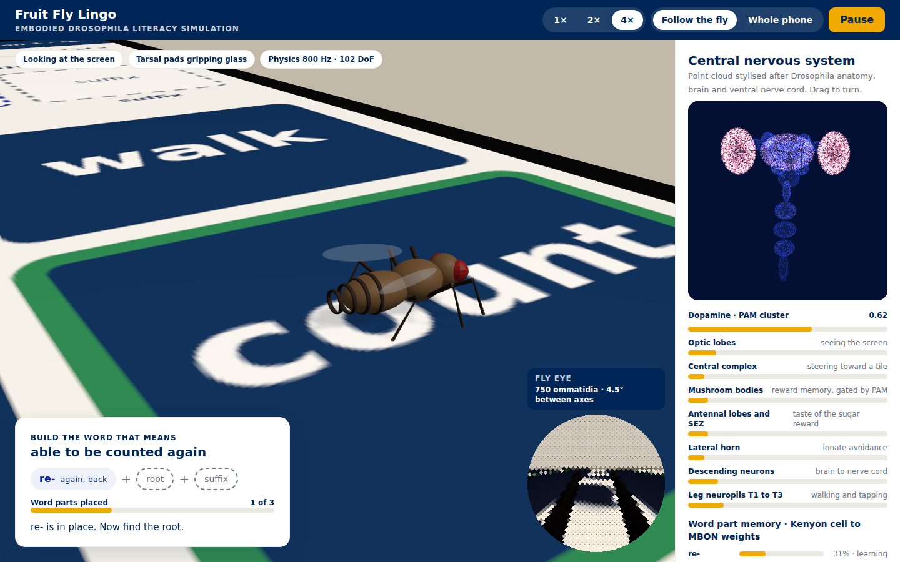
A correct tap. The part fills its slot, mushroom bodies and taste centres fire, the wings buzz, the proboscis extends, and the memory strengthens.
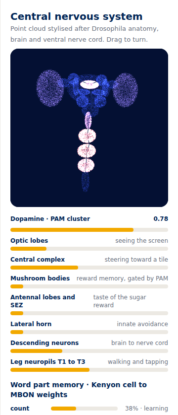
The brain panel. About 55,000 points in blobs placed after Drosophila anatomy, fibre tracts with travelling pulses, dopamine, per-region activity and per-morpheme memory.
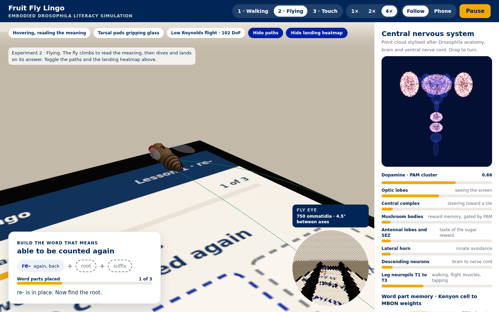
Reading in the air. In Experiment 2 the fly climbs to a hover point over the meaning and reads with a head sweep before diving.
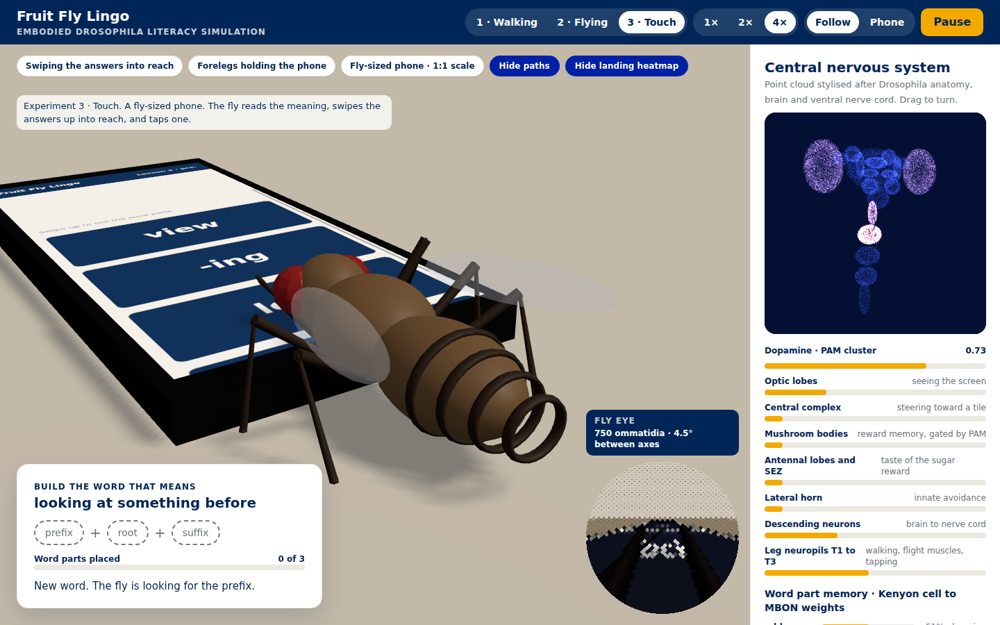
Swiping. In Experiment 3 the answers sit below the fold; a foreleg drag scrolls them into reach.
Experiment
Phone
Reading
Answering
Records
1 · Walking
Table-sized, lying flat
Head sweep from where it stands
Walks to the tile, presses with a foreleg
Walking paths, press heatmap
2 · Flying
Table-sized, lying flat
Climbs to a hover point over the prompt
Dives and lands on the tile; landing is the answer
Flight paths, landing heatmap
3 · Touch
Fly-sized, held at the bottom edge
Reads at scroll 0
Swipes the list, then taps
Press heatmap in content coordinates
The dashboards
Everything is computed from the live session; where a quantity stands in for a sensor or model the app does not yet have, its card says so. The same cards dock beside the arena in the Simulate view.
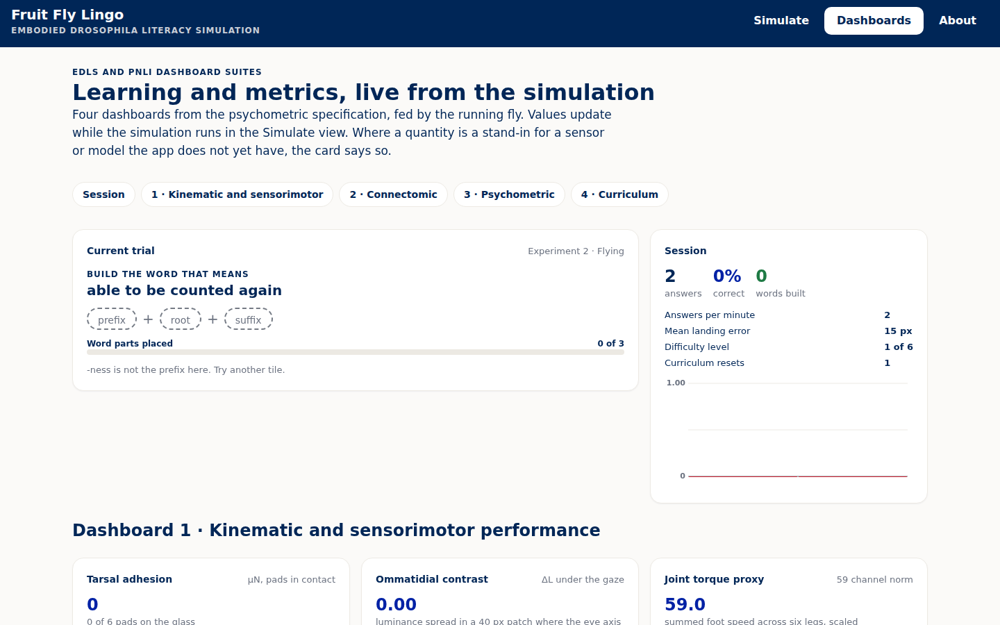
1 · Kinematic and sensorimotor. Tarsal adhesion, contrast sampled from the screen texture where the head camera looks, a torque proxy, the microsaccadic gaze path, viewing distance against the 1 to 10 mm band and an acuity heatmap.
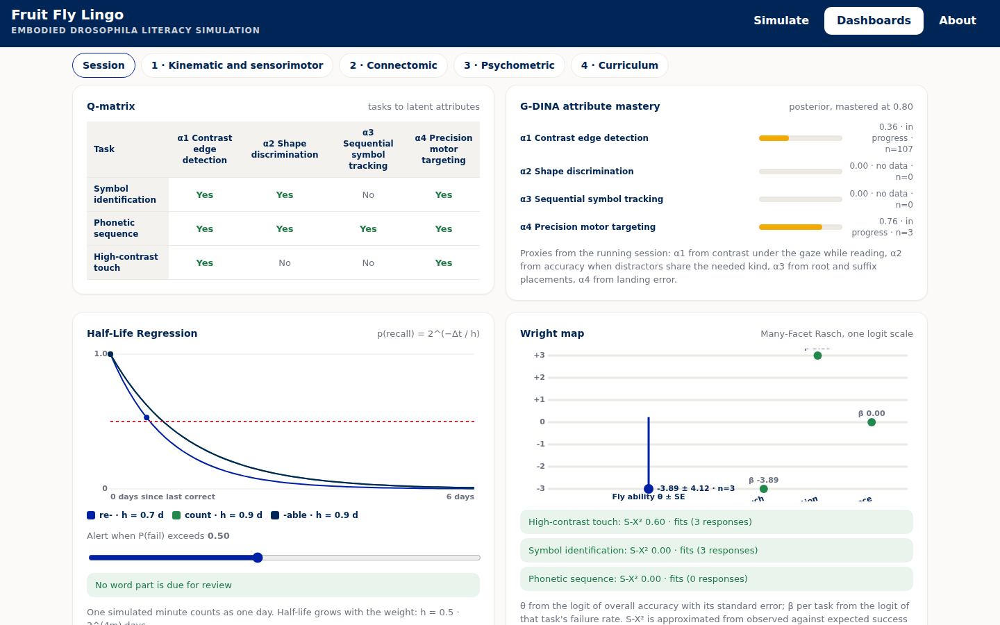
3 · Psychometric. The Q-matrix, G-DINA posteriors, Half-Life Regression curves with a P(fail) alert, and a Wright map with θ ± SE against task difficulties and S-X² flags.
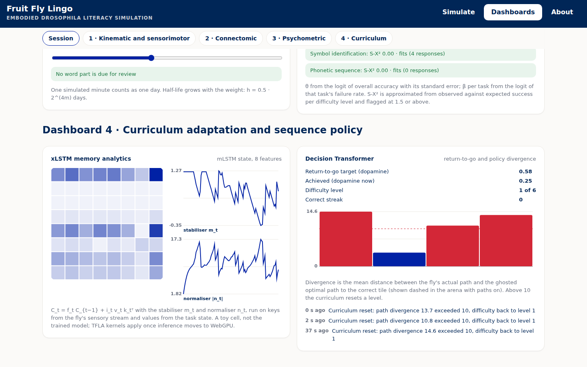
2 and 4 · Connectomic and curriculum. Class activity by neurotransmitter, Δw = η(R − V) per answer, STM versus LTM, a connectivity matrix with a dataset toggle; a toy mLSTM state and Decision Transformer divergence that resets difficulty.
Technical architecture
The whole application lives in one HTML file. The diagrams group it by responsibility; arrows are data or control flow at run time. They are the same diagrams as in the repository README.
Component architecture
flowchart TB
subgraph Browser["Browser · index.html"]
direction TB
subgraph UI["HUD · HTML + CSS (UF design tokens)"]
Header["Header controls<br/>experiment · speed · camera · pause"]
TrialCard["Trial card<br/>meaning · placed chips · progress · feedback"]
StatePills["State pills<br/>phase · adhesion · physics"]
BrainHUD["Brain panel HUD<br/>dopamine · region bars · memory · stats"]
EyeLabel["Fly-eye label"]
end
subgraph Game["Curriculum and game state"]
WORDS["WORDS[]<br/>word · meaning · parts · glosses"]
Distractors["DISTRACTORS[]"]
GameState["game<br/>wordIdx · placed · tiles · flash<br/>memory Map · dopamine · taps · correct"]
buildTiles["buildTiles()<br/>remaining parts + distractors, shuffled"]
registerTap["registerTap(i)<br/>correct → memory↑ dopamine↑ placed++<br/>wrong → memory↓ dopamine↓ flinch"]
nextWord["nextWord()"]
end
subgraph Screen["Phone screen"]
ScreenCanvas["2D canvas 390×844<br/>drawScreen(): grid layout, or scrolling list for Touch"]
ScreenTex["THREE.CanvasTexture<br/>map + emissiveMap on the screen plane"]
pxToWorld["pxToWorld(px, py)<br/>content px → phone local → world, through phone scale"]
end
subgraph Agent["Agent · state machine (stepAgent), one path per experiment"]
Look["look<br/>head sweep · optic lobes"]
Walk["1 walk<br/>steer to stand point · gait · CX, DN, T1–T3"]
Takeoff["2 takeoff → hover<br/>climb over the prompt, read"]
Dive["2 dive → land<br/>bezier to the tile, landing = answer"]
Scroll["3 scroll<br/>foreleg swipes move scrollY"]
Tap["tap<br/>foreleg reach · press · return"]
React["react"]
Celebrate["celebrate<br/>word complete"]
chooseTile["chooseTile()<br/>P(correct) = 0.35 + 0.6 · memory"]
pickTarget["pickTarget()<br/>tile centre + normal scatter"]
Look --> Walk --> Tap
Look --> Takeoff --> Dive --> React
Look --> Scroll --> Tap
Tap --> React --> Look
Tap --> Celebrate --> Look
Dive --> Celebrate
end
subgraph Records["Trajectories and heatmap"]
Traj["trajGroups[exp]<br/>THREE.Line per trial, green or red"]
Heat["heat[exp] canvas<br/>radial blobs at landing px, drawn into the screen"]
Toggles["Show paths · Show landing heatmap"]
end
subgraph Fly["Procedural fly (animateFly)"]
Body["body group<br/>thorax · abdomen · head · eyes · antennae"]
Wings["wings<br/>buzz on reward"]
Proboscis["proboscis<br/>extends on reward"]
Legs["6 legs · femur + tibia<br/>world-space feet · tripod stepping"]
IK["solveLeg()<br/>two-bone analytic IK"]
FlyState["flyState<br/>pos · yaw · headYaw · buzz · flinch · gaitPhase"]
end
subgraph Brain["Brain activity model"]
Regions["REGIONS[16]<br/>optic L/R · central · MB L/R · CX · AL L/R<br/>LH L/R · SEZ · DN · T1 · T2 · T3 · ABD"]
Act["act[16] Float32Array<br/>pulse(i, v) · exponential decay"]
PointCloud["Points ~55k<br/>ShaderMaterial: region → act[] → colour, size"]
Fibres["FIBRES[14] CatmullRom tracts<br/>pulse particles gated by source activity"]
Groups["GROUPS[7]<br/>anatomical labels for the HUD"]
end
subgraph Render["Rendering · three.js r160"]
MainScene["Main scene<br/>table · phone · glass · fly · lights · shadows"]
MainCam["Perspective camera + OrbitControls<br/>follow / phone modes"]
EyeCam["Eye camera on the head<br/>fov 140"]
EyeRT["WebGLRenderTarget 256²"]
EyeShader["Ommatidia shader quad<br/>hex nearest-centre sampling"]
BrainScene["Brain scene · second renderer<br/>OrbitControls autoRotate"]
Loop["frame()<br/>dt = raw · speed, substepped at 25 ms"]
end
end
CDN["cdn.jsdelivr.net<br/>three.module.js · OrbitControls.js"] -.import map.-> Render
Header -->|speed, camera, play| Loop
Header -->|set camera mode| MainCam
BrainHUD -->|reset| GameState
WORDS --> buildTiles --> GameState
Distractors --> buildTiles
GameState --> ScreenCanvas --> ScreenTex --> MainScene
GameState --> TrialCard
GameState --> BrainHUD
Loop --> Agent
Loop --> Fly
Loop -->|decay| Act
Loop --> MainCam
chooseTile --> pickTarget
GameState --> chooseTile
pickTarget --> pxToWorld
pxToWorld --> FlyState
Walk -->|record positions| Traj
Dive -->|record positions| Traj
registerTap -->|landing px| Heat
Heat --> ScreenCanvas
Toggles --> Traj
Toggles --> Heat
Traj --> MainScene
Agent -->|pulse| Act
Agent -->|phase| StatePills
Tap -->|foot reaches tile| Legs
Tap --> registerTap --> GameState
registerTap -->|pulse| Act
registerTap -->|buzz, proboscis, flinch| FlyState
Celebrate --> nextWord --> GameState
FlyState --> Body
FlyState --> Wings
FlyState --> Proboscis
Legs --> IK --> MainScene
Body --> EyeCam
Regions --> PointCloud
Regions --> Fibres
Act --> PointCloud
Act --> Fibres
Act --> Groups --> BrainHUD
PointCloud --> BrainScene
Fibres --> BrainScene
MainScene --> MainCam --> Loop
MainScene --> EyeCam --> EyeRT --> EyeShader -->|scissor viewport| Loop
BrainScene --> Loop
Agent state machine
stateDiagram-v2
[*] --> look
look: look - head sweeps, optic lobes active, Touch scrolls back to the top
state "Experiment 1 - Walking" as E1 {
walk: walk - turn toward the tile and move to a stand point short of it
}
state "Experiment 2 - Flying" as E2 {
takeoff: takeoff - eased climb to the hover point over the prompt
hover: hover - bob in place, face up the screen, read with a head sweep
dive: dive - quadratic bezier to the landing point, body pitches with velocity
land: land - feet planted, landing registered as the answer
takeoff --> hover
hover --> dive: pick a tile
dive --> land
}
state "Experiment 3 - Touch" as E3 {
scroll: scroll - foreleg swipes until the tile sits at the tap line
}
tap: tap - nearest foreleg reaches, presses the glass and returns, registerTap fires at the press
react: react - short pause, flinch if wrong
celebrate: celebrate - wing buzz, then the next word
look --> walk: experiment 1, pick a tile
look --> takeoff: experiment 2
look --> scroll: experiment 3, pick a tile
walk --> tap: at the stand point, facing the tile
scroll --> tap: tile in reach
tap --> react: word not complete
tap --> celebrate: 3 of 3 placed
land --> look: word not complete
land --> celebrate: 3 of 3 placed
react --> look
celebrate --> look: new word, tiles rebuilt
One answer, end to end
sequenceDiagram
participant L as frame loop
participant A as stepAgent
participant G as game state
participant S as drawScreen / CanvasTexture
participant F as fly (legs, IK)
participant B as act[] / brain
participant H as HUD
L->>A: dt (substepped)
A->>G: chooseTile() reads memory of the needed part
A->>F: stand point from pxToWorld(tile), yaw toward tile
loop each substep while walking
A->>B: pulse(CX, DN, T1–T3)
F->>F: step feet that drift > 0.5 from rest, solve IK
end
A->>F: foreleg foot lerps to the tile, presses the glass
A->>G: registerTap(tileIdx)
G->>G: add landing px to the heatmap, close the trajectory line
alt correct part
G->>G: memory[part] += 0.22·(1−m), dopamine += 0.28, placed++
G->>B: pulse(MB L/R, AL L/R, SEZ)
G->>F: buzz = 0.9, proboscis = 1
else wrong part
G->>G: memory[part] −= 0.03, dopamine −= 0.14
G->>B: pulse(LH L/R, DN)
G->>F: flinch = 1
end
G->>S: flash tile, redraw, texture.needsUpdate
G->>H: renderTrial() chips, progress, feedback, stats, memory
L->>B: decay act[] toward 0.08
L->>H: renderBrainHud() every 70 ms
L->>L: render main scene, eye inset, brain scene
From this app to the full EDLS
flowchart LR
subgraph Now["In this repo today"]
UI["3D language interface<br/>screen · tiles · trial card"]
FlyP["Procedural fly<br/>IK gait, flight, swipe, tap, buzz, flinch<br/>six experiments"]
Policy["Behavioural policy<br/>memory-weighted tile choice"]
BrainViz["Stylised CNS point cloud<br/>16 regions, act[]"]
Eye["Fly-eye mosaic<br/>750 ommatidia, 4.5°"]
end
subgraph Planned["Planned per the TRD"]
MuJoCo["MuJoCo flybody via WebAssembly<br/>800 Hz, adhesion actuators"]
FlyGM["FlyGM connectome controller<br/>MaleCNS v1.0, PAM reward"]
xLSTM["xLSTM + TFLA on WebGPU"]
xAPI["xAPI statements"]
DMZ["Science DMZ · DTN"]
LRS["Learning Record Store"]
Eval["G-DINA · HLR · Rasch · DDT"]
end
Policy -. replaced by .-> FlyGM
FlyP -. replaced by .-> MuJoCo
BrainViz -. fed by .-> FlyGM
Eye -. rendered from .-> MuJoCo
UI --> xAPI --> DMZ --> LRS --> Eval
Eval -. difficulty .-> UI
FlyGM --> xLSTM
Diagrams render with Mermaid when the library loads; otherwise the source is shown.
The laptop experiments
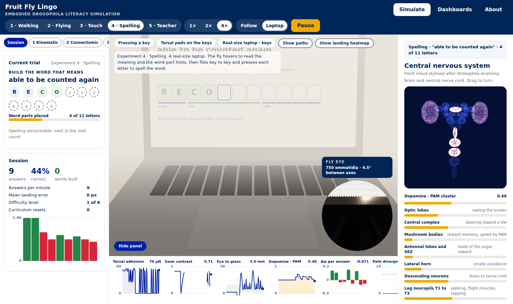
4 · Spelling. A real-size laptop runs a spelling activity: the meaning and the three word-part hints on screen, a row of letter boxes below. The fly hovers to read, then flies key to key and presses each letter with its body. A wrong letter lands on a neighbouring key and flashes red.
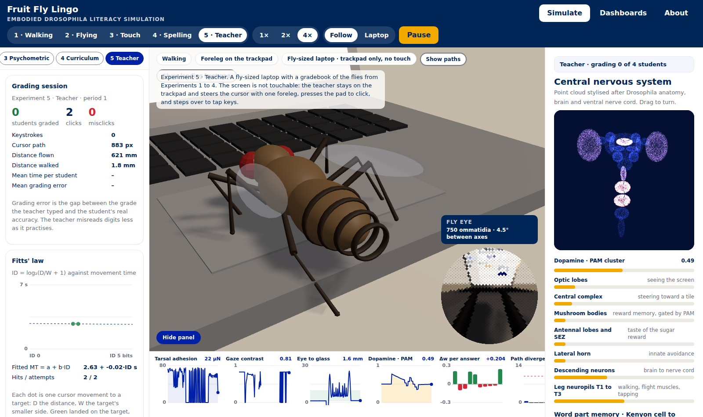
5 · Teacher. A fly-sized laptop with a gradebook whose students are Flies A to D from Experiments 1 to 4. The screen is not touchable: the teacher stays on the trackpad, steers the cursor with one foreleg, presses the pad to click, and steps over to tap keys for the grade.
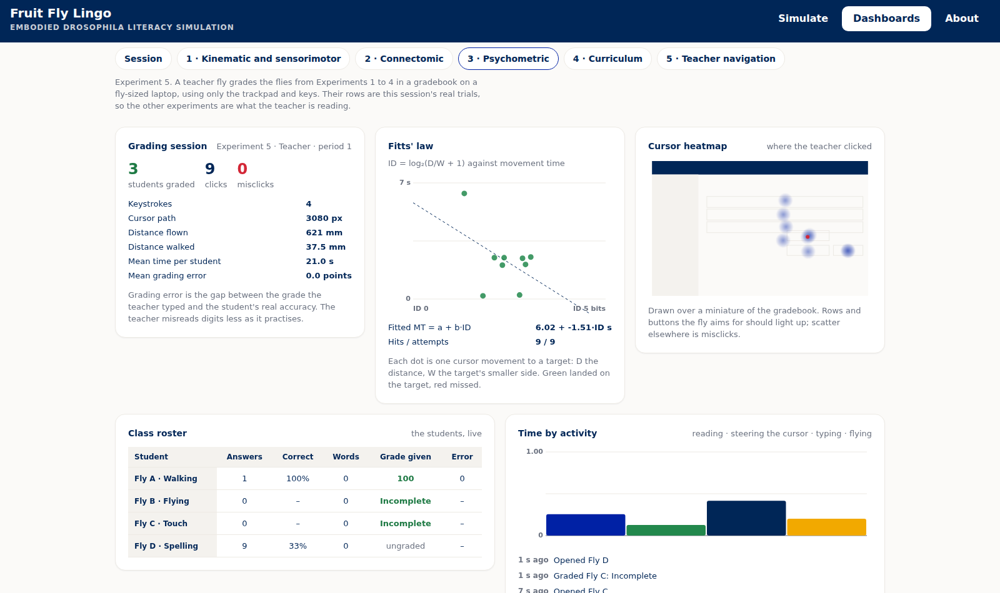
Dashboard 5 · Teacher navigation. Clicks and misclicks, keystrokes, distances, grading error against real accuracy, a Fitts' law scatter with a fitted line, a click heatmap, the live roster and time by activity.
The grades are meta by design: the four student experiments produce the data the teacher reads on the laptop, and the teacher's own navigation becomes a second study, measured with the same care as the students'.
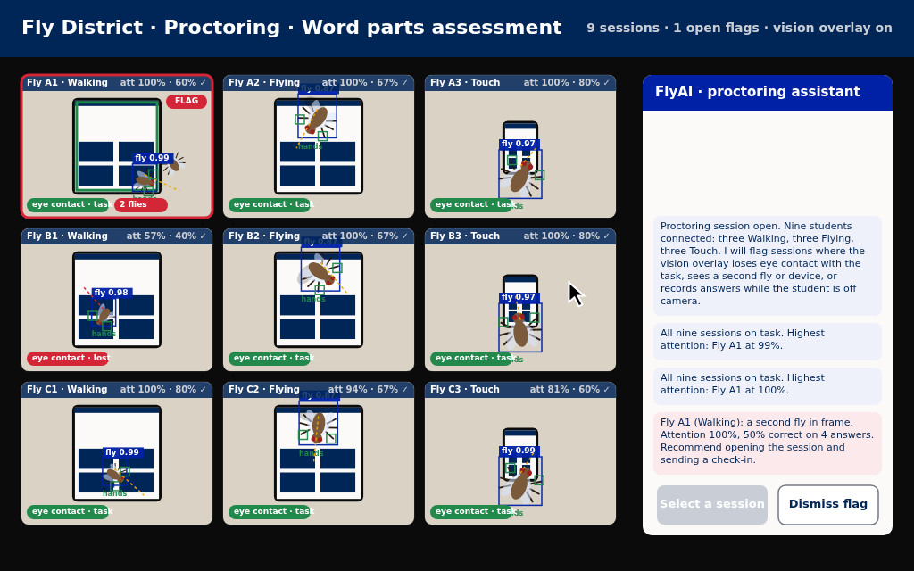
6 · District admin, the screen. Nine webcam sessions, three each of walking, flying and touch students. The vision overlay boxes each fly, its forelegs and its gaze with an eye-contact badge; a flagged tile is outlined in red. FlyAI on the right explains what it saw and recommends a check-in.
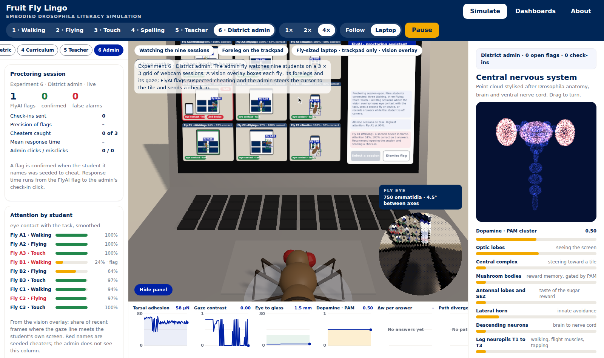
6 · District admin, the desk. Same fly-sized laptop as the teacher, trackpad only. The admin watches, then steers the cursor to a flagged tile, opens it, and clicks the check-in button in the FlyAI panel.
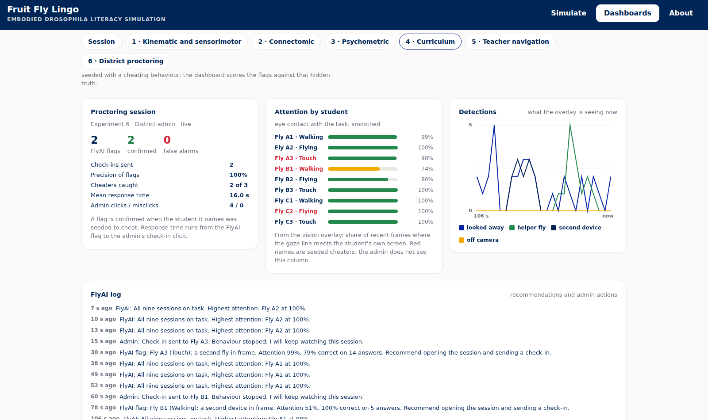
Dashboard 6 · District proctoring. Flags, confirmations and false alarms scored against the three seeded cheaters, precision and cheaters caught, response time, attention per student, detection counts over time, and the FlyAI log.
Three of the nine students are seeded each session with one behaviour: looking away from the task, a helper fly in frame, a second device, or answering while off camera. Honest students still glance away now and then, which is where false alarms come from. The admin never sees which students were seeded; the dashboard does, so the flags can be scored.
From this app to the full EDLS
In the browser today
Procedural body and behaviour, a memory-weighted policy, a stylised brain, the fly-eye mosaic, the curriculum, and the four dashboards running on live telemetry from the scene.
Planned per the requirement document
The MuJoCo flybody model compiled to WebAssembly at 800 Hz with 102 degrees of freedom and adhesion actuators; the Fly-connectomic Graph Model on the MaleCNS v1.0 connectome (166,691 neurons, more than 125 million synapses) as the controller; xLSTM with Tiled Flash Linear Attention on WebGPU; xAPI telemetry through a Science DMZ into a Learning Record Store.
Research library
The five reports behind the design, with page images from each. Every source they cite is listed below.
Evaluating a simulated Drosophila connectome in a web-based language acquisition environment. 17 pages. The source of the Q-matrix, G-DINA, Half-Life Regression, Rasch and Decision Transformer methods used in the dashboards.
Google maps entire brain and central nervous system of adult male https://www.tomshardware.com/software/programming/google-maps-entire-brain-and-central-nervous-system-of-adult-male-fruit-fly-software-engineers-immediately-make-it-run-doom-ai-powered-3d-model-of-over-166-000-neurons-can-also-play-super-mario-64
MuJoCo fruit fly body model datasets supporting "Whole-body https://janelia.figshare.com/articles/dataset/MuJoCo_fruit_fly_body_model_datasets_supporting_Whole-body_simulation_of_realistic_fruit_fly_locomotion_with_deep_reinforcement_learning_/25309105
The Generalized Cognitive Diagnosis Model Framework for https://www.cambridge.org/core/journals/psychometrika/article/generalized-cognitive-diagnosis-model-framework-for-polytomous-attributes/6FE53D3E5DD5B473DF5C91CEA7301560
The CDA-BPD: retrofitting a traditional borderline personality https://www.cambridge.org/core/journals/journal-of-pacific-rim-psychology/article/cdabpd-retrofitting-a-traditional-borderline-personality-questionnaire-under-the-cognitive-diagnosis-model-framework/A2E6748514EB4759F8D93E183B10EA6D
Styling uses a University of Florida palette: core blue for actions, dark blue for chrome and text, alachua for work in flight, gator green for mastery, and bottlebrush red only for errors. Headings and controls are set in Neulis Sans and running text in Liebling, both with system fallbacks. The simulation is a single HTML file on three.js. Source on GitHub.